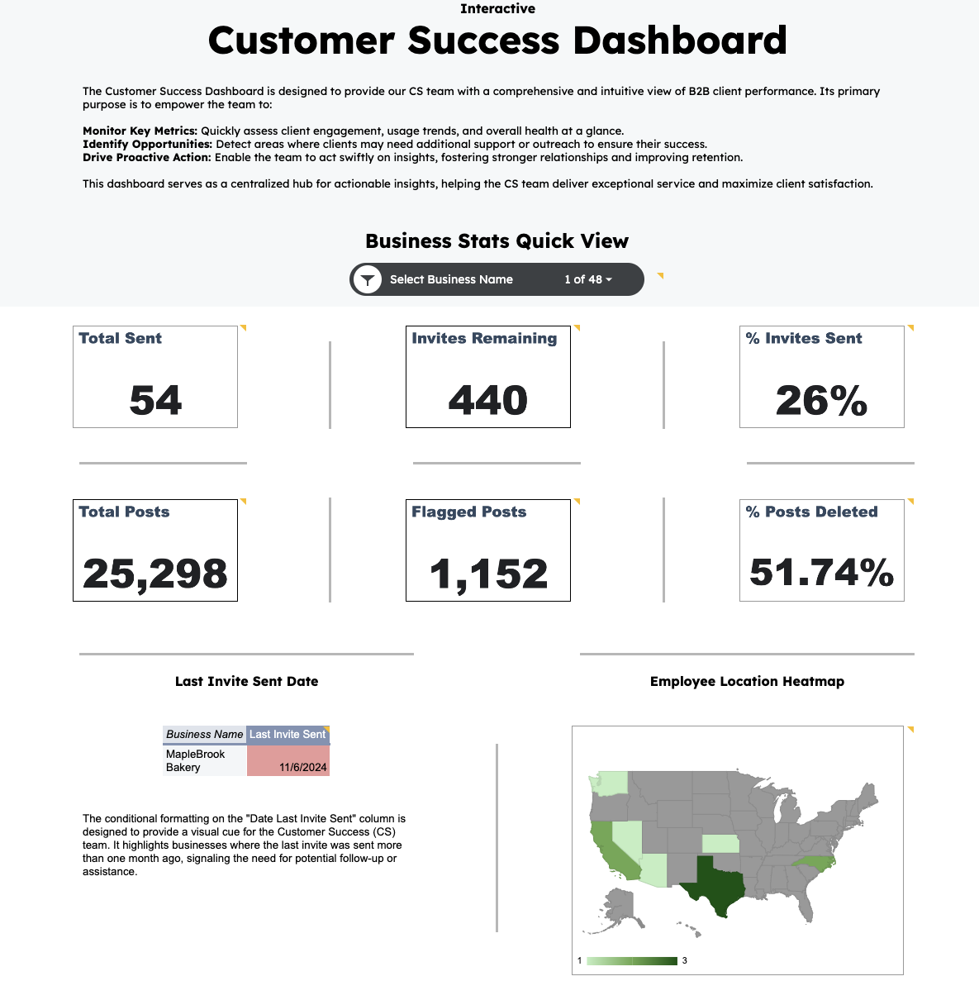

Google Sheets Dashboard
Explore this comprehensive dashboard built in Excel and Google Sheets. It provides insights into key metrics such as revenue growth, customer behavior, and churn analysis.
 Explore Interactive DashboardKey Insights
- Top-performing metrics show an average growth rate of 15% over the last quarter.
- Key areas of improvement identified include customer retention and operational efficiency.
- Interactive charts provide a breakdown of performance by region and department.